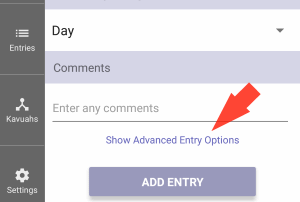

In Luach, an Entry is a euphemism for a period. (The Halachic term for a period is a "seeing" - ראיה).
Entries are the most basic piece of information that needs to be retained in order to keep a valid Halachic calendar.
The goal of keeping track of entries is threefold:
Luach uses the list of Entries to automatically calculate the Flagged Dates and possible Kavuahs.
The day, month and year of the Jewish Date for the beginning of the period.Onah
Each Jewish day is divided into two "Onahs"; the Night Onah and the Day Onah.HaflagaIf the period began between sunset and sunrise, the Entry is considered to have occurred during the Night Onah. If it began between sunrise and sunset, it is considered to have occurred during the Day Onah.
Luach is able to give you the time of sunset and sunrise for any location around the globe for any date. Make sure that you have selected your current location on the Settings Screen, and that your device has the correct time and time zone for your location.
If the time of the start of the period is close to the time of sunset or sunrise (within about 15 minutes), it is strongly advisable to contact your Rav to help determine the correct date and Onah for that Entry.
The Haflaga is the number of days (or partial days) between the previous Entry and this one. Upon the addition of an Entry, Luach automatically works out the Haflaga from the previous Entry.
It is very important to note that not every seeing is considered a Halachic Vesset Entry.
For example, staining and the like are usually not considered Halachic Entries even those that
require the Niddah restrictions.
Any seeing is not a regular monthly period, needs Rabbinic determination whether or not to record
it as a regular Entry.
 In Luach, when an
Entry is added, by default, it is assumed to be a regular period. In cases where it was determined that
it should not be recorded as a regular Entry, Luach has two special options that can be set for each
Entry.
On the New Entry Screen, just above the "Add Entry" button, press on "Show Advanced Entry Options".
Two special advanced options will appear that can be set for this Entry:
If there is a Kavuah that is active and that is set to Cancel Onah Beinonis,
whenever an Entry is added or edited, Luach checks to assure that the new Entry is not "Out of Pattern".
If the new Entry does not match the pattern set by the Kavuah, Luach will ask if you wish to remove the
Cancel Onah Beinonis property for that Kavuah.
The list of Entries that have been added can be viewed from the Entries List Screen.
In the Entry List, the Entries are shown sorted to show the most recent Entries on top and the oldest ones on the bottom.
To assist in giving a glancing overview of the Entry list trends, each Entries background color (dark or light) is set according
to which Onah it occurred in.
The icon shown by each Entry is also either a sun or a moon according to the Entries Onah.
Each Entry has the following option buttons:
Pressing this will take you to the Jewish calendar date when the Entry started.Edit
This will take you to the Edit Entry Screen, to change any of the Entry's properties (including the advanced ones).New Kavuah
This option will not be shown for an Entry that is the Setting Entry for a Kavuah.
This will take you to the New Kavuah screen to add a new Kavuah.Remove
For this new Kavuah, this Entry will be used as it's Setting Entry.
This will totally remove this Entry from the list.
Once removed, it is gone. The only way to add it again, is to add it as a New Entry.
If any Kavuahs have this Entry set as their Setting Entry these Kavuahs will be removed as well.
Before deleting any Entries or Kavuahs, Luach will ask you to confirm the removal.
 Main Screen
Main Screen